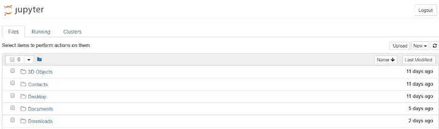

Getting Started with Machine Learning
In the rapidly evolving world of technology, machine learning has emerged as a game-changing force, transforming industries across the board. From healthcare and finance to transportation and marketing, organizations are leveraging the potential of machine learning algorithms to drive innovation, enhance decision-making processes, and achieve unprecedented levels of efficiency.
"The best way to predict the future is to create it." — Peter Drucker
AI aka Artificial Intelligence
Is it a human or a machine? Are computer programs so smart and work efficiently like a human brain?
AI refers to the capability of a machine or a computer system to mimic or imitate human-like intelligence, including the ability to learn, reason, problem-solve, and make decisions.
Machine Learning branches out from AI
Machine learning is a subfield of artificial intelligence (AI) that involves the development of algorithms and statistical models that enable computers to learn from and make predictions or decisions based on data, without being explicitly programmed. It involves the use of data to train algorithms to recognize patterns, make predictions, or solve problems, without being explicitly programmed to do so.
History of Machine Learning
It dates back to the mid-20th century, with the development of early concepts and algorithms that laid the foundation for modern machine learning.
1950s-1960s:
- Early work on artificial neural networks, perceptrons, and the development of "Rosenblatt's perceptron" algorithm, which was one of the first supervised learning algorithms.
- The concept of reinforcement learning was introduced, which focuses on training agents to take action in an environment to maximize rewards.
1970s-1980s:
- The development of decision tree algorithms, such as ID3 and C4.5, which are used for classification tasks.
- The introduction of the k-Nearest Neighbors algorithm, a simple instance-based learning approach.
- The concept of unsupervised learning was introduced, which focuses on learning patterns or structures in data without labeled examples.
1990s-2000s:
- The development of support vector machines (SVMs), a popular algorithm for binary classification tasks.
- The rise of ensemble methods, such as bagging and boosting, which combine multiple models to improve performance.
- The introduction of kernel methods, such as the kernel trick used in SVMs, allows non-linear transformations of data.
- The development of probabilistic graphical models, such as Bayesian networks and Markov models, which model the relationships among variables in data.
2010s-2020s:
- The breakthroughs in deep learning, particularly convolutional neural networks (CNNs) for image recognition and recurrent neural networks (RNNs) for sequential data processing.
- The advancements in natural language processing (NLP), include word embeddings, recurrent neural networks (RNNs), and transformer models such as BERT and GPT-3.
- The rise of big data and the development of scalable machine learning frameworks, such as Apache Spark and TensorFlow.
- The increased focus on ethical considerations in machine learning, including fairness, transparency, and accountability.
Types of Machine Learning
Unsupervised Learning:
This mainly focuses on what happened.
- Unlabeled Data
- Finding Patterns
- Anomaly Detection
- Feature Extraction
- No Ground Truth
- Dimensionality Reduction
Relative Links: Learn more about Unsupervised Learning
Supervised Learning:
This mainly focuses on what's going to happen.
- Labeled Data
- Predictive Analysis
- Classification & Regression
- Direct Feedback
- Model Evaluation
- Model Selection & Tuning
Relative Links: Learn more about Supervised Learning
Reinforcement Learning:
This mainly focuses on how to make it happen.
- Exploration and Exploitation
- Learning from Feedback
- Reward Function
- Trial-and-Error Learning
- Sequential Decision Making
- Markov Decision Process
Relative Learning: Learn more about Reinforcement Learning
Machine Learning and Man in the Street
- Personalized experiences: Most of us today enjoy personalized experiences through recommendation systems used in online shopping, streaming services, social media, and more. These recommendations are powered by ML algorithms that analyze our data to provide tailored content, products, and services.
- Accessibility to information: It has made information more accessible to us through search engines, virtual assistants, and language translation tools.
- Improved healthcare: It is being used in medical diagnostics, telemedicine, and remote monitoring, making healthcare services more accessible and convenient for common people.
- Automation of tasks: It can automate repetitive tasks, such as customer service, data entry, and document processing, freeing up time for us to focus on more meaningful activities or leisure pursuits.
- Enhanced safety: It is used in technologies like driver-assistance systems in cars and smart home devices, which can enhance safety by reducing human errors and accidents, making everyday life safer and more convenient.
- Personal finance management: Algorithms can analyze financial data and provide personalized financial advice, helping us make informed decisions about budgeting, investing, and financial planning, potentially improving our financial well-being.
- Environmental impact: It can be used in areas such as climate modeling, energy optimization, and waste management, which can have a positive impact on the environment and contribute to a better quality of life for all.
Machine Learning Requirements
Python (https://www.python.org/), latest release 3.11.2, is a popular programming language due to its extensive libraries, ease of use, and wide community support.
Libraries:
Python has a rich ecosystem of ML libraries, such as TensorFlow, Keras, PyTorch, Scikit-Learn, and NumPy, which provide powerful tools for building ML models, handling data, and evaluating model performance.
Useful Editors:
- Jupyter Notebook
- PyCharm
- Google Colaboratory
- Atom
- PyDev
Getting Started with Jupyter Notebook
The easiest way for a beginner to get started with Jupyter Notebooks is by installing Anaconda.
Anaconda is the most widely used Python distribution for data science and comes pre-loaded with all the most popular libraries and tools.
To get Anaconda, simply:
- Download the latest version of Anaconda for Python latest version.
- Install Anaconda by following the instructions on the download page and/or in the executable.
- Open Jupyter via the shortcut Anaconda.

Anaconda Navigator - Your gateway to Jupyter - Browse to the folder in which you would like to create your first notebook, click the "New" drop-down button in the top-right and select "Python 3":
Creating a new Python 3 Jupyter notebook
The Notebook Interface
There are two fairly prominent terms: cells and kernels are key both to understanding Jupyter.
- A kernel is a "computational engine" that executes the code contained in a notebook document.
- A cell is a container for text to be displayed in the notebook or code to be executed by the notebook's kernel.
Type print('Hello World!') into the cell and click the run button.
Hurray!! You have your first code of Python ready.
For more information and to get familiar with Jupyter: Jupyter Documentation
Books to Refer:
- "Pattern Recognition and Machine Learning" by Christopher Bishop: This covers the fundamentals of machine learning, including various models such as linear regression, logistic regression, decision trees, support vector machines, neural networks, and more. It also provides in-depth explanations of key concepts and practical implementation techniques. — My Personal Favorite.
- "Hands-On Machine Learning with Scikit-Learn, Keras, and TensorFlow" by Aurélien Géron
- "Deep Learning" by Ian Goodfellow, Yoshua Bengio, and Aaron Courville
- "Python Machine Learning" by Sebastian Raschka and Vahid Mirjalili
- "Applied Machine Learning" by Kelleher, Mac Namee, and D'Arcy